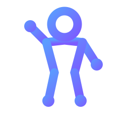
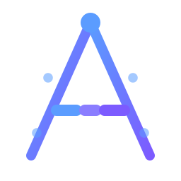
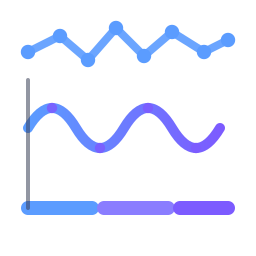
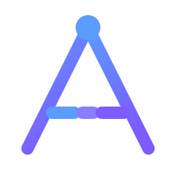

四个方向 · 深色底（README）· 浅色底（文档 / 打印 / favicon 反色）

人体骨架 + 抬起的手。语义最直白，一眼看出「人体姿态识别」。
assets/logo/logo-a-skeleton.svg
同一图形在白底上的效果。

上升的折线 + 三段渐变横条。抽象地表达「动作段被切分出来」。
assets/logo/logo-b-timeline.svg
同一图形在白底上的效果。

关键点序列 + 概率波形 + 分段条。最贴近实际输出形态。
assets/logo/logo-c-waveform.svg
同一图形在白底上的效果。

把 ActionFlow 的 A 和 F 融进一个「A」形，横条是动作段。字母感最强。
assets/logo/logo-d-monogram.svg
同一图形在白底上的效果。
README 标题旁通常是 40px，Gitee/GitHub 角标是 20~32px。缩到这个尺寸时细节会大量丢失， 所以要挑轮廓简单、笔画粗的那个。
| 方案 | 表达的含义 | 小尺寸 | 取舍 |
|---|---|---|---|
| A 骨架 | 人体姿态 | 一般 | 最直观，但缩小后细节糊；容易和「通用姿态估计」项目混淆 |
| B 时间轴 | 动作段切分 | 好 | 最像「logo」而不是插画；抽象但几何感强，小尺寸辨识度高 |
| C 波形 | 帧级时序 | 一般 | 信息量最大，但太像数据可视化截图，不够「品牌」 |
| D 字母 | 品牌首字母 | 最好 | 字母感最强、最像正式开源项目；和项目名的联系需要一点解释 |